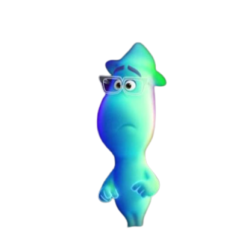

Main Character

- Joe Gardner / Jamie Foxx
- 무명 재즈 피아니스트. 중학교 음악교사로 일하고 있다.
음악에 대한 열정만으로 안정적인 직업보다는
자신의 오랜 꿈이었던 프로 뮤지션을 택하려고 한다.
- 22 / tina fey
- 아직 지구에서 태어나지 않은 인간의 영혼들 중에서도
문제아 중의 문제아로, 수천 년 동안 지구로 내려가는
것을 거부하면서 계속 태어나기 전 세상에 머물러 있다.
가슴 속 불꽃을 찾지못해 방황하는 중이다.
favorite scene
-

- moonwind / graham norton
- 핑크색으로 빛나는 배를 몰고 다니며 길
을 잃고 헤매는 영혼들을 구조하는 신비
주의 클럽의 일원, 간판 돌리기 아르바
이트를 하는 히피 아저씨에 불과하지만
사람들의 영혼을 돕는 선한 인물이다.
-
- Mr. mittens / jamie foxx
- 조가 본인의 몸이 아닌 미튼스의 몸에
돌아와 미튼스의 영혼은 머나먼 저세상으로
가고 조가 미튼스의 몸에 들어와 본인의
영혼을 되찾으려고 한다, 미튼스는 병원
에서 테라피애니멀로 활동한다.
-
- terry / rachel house
- 머나먼 저세상으로 넘어가는 인원을
체크하는 작업을 맡고 있다. 동료들에게
뻐기는것을 좋아하지만 자신이 맡은 일
만큼은 책임감이 뛰어나다. 내세로 넘어갈
영혼 하나가 비자 그를 추적한다.
-
- Dorothea / angela bassett
- 뉴욕시의 저명한 재즈 뮤지션.
자신의 밴드와 공연장을 가지고 있으며
색소폰 연주자이기도 하다. 까칠한 성격
이지만 자신이 실력을 인정한 사람
에게는 호탕한 면을 보인다.
-
- libba / phylicia rashad
- 조의 어머니. 재봉사. 조가 그의 아버지와
마찬가지로 음악에 미쳐있는 것을 우려해
그가 전업 뮤지션이 되는 것을 항상 반대해
왔다. 가족의 생계를 책임졌던 생활력 있는
아내이자 어머니이다.
-
- dez / donnell rawlings
미용학교로 진학해 이발사가 되었다
- 조의 단골 이발소의 이발사. 원래 해군에
입대해 모은 돈으로 수의대를 가려고 했으나,
딸의 병원비를 감당해야 해서 학비가 싼
미용학교로 진학해 이발사가 되었다.
- moonwind / graham norton
- 핑크색으로 빛나는 배를 몰고 다니며 길
을 잃고 헤매는 영혼들을 구조하는 신비
주의 클럽의 일원, 간판 돌리기 아르바
이트를 하는 히피 아저씨에 불과하지만
사람들의 영혼을 돕는 선한 인물이다.
- Mr. mittens / jamie foxx
- 조가 본인의 몸이 아닌 미튼스의 몸에
돌아와 미튼스의 영혼은 머나먼 저세상으로
가고 조가 미튼스의 몸에 들어와 본인의
영혼을 되찾으려고 한다, 미튼스는 병원
에서 테라피애니멀로 활동한다.
- terry / rachel house
- 머나먼 저세상으로 넘어가는 인원을
체크하는 작업을 맡고 있다. 동료들에게
뻐기는것을 좋아하지만 자신이 맡은 일
만큼은 책임감이 뛰어나다. 내세로 넘어갈
영혼 하나가 비자 그를 추적한다.
- Dorothea / angela bassett
- 뉴욕시의 저명한 재즈 뮤지션.
자신의 밴드와 공연장을 가지고 있으며
색소폰 연주자이기도 하다. 까칠한 성격
이지만 자신이 실력을 인정한 사람
에게는 호탕한 면을 보인다.
- libba / phylicia rashad
- 조의 어머니. 재봉사. 조가 그의 아버지와
마찬가지로 음악에 미쳐있는 것을 우려해
그가 전업 뮤지션이 되는 것을 항상 반대해
왔다. 가족의 생계를 책임졌던 생활력 있는
아내이자 어머니이다.
- dez / donnell rawlings 미용학교로 진학해 이발사가 되었다
- 조의 단골 이발소의 이발사. 원래 해군에
입대해 모은 돈으로 수의대를 가려고 했으나,
딸의 병원비를 감당해야 해서 학비가 싼
미용학교로 진학해 이발사가 되었다.